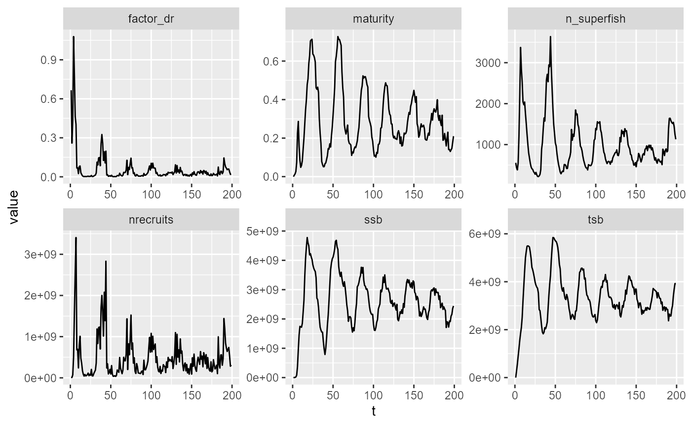
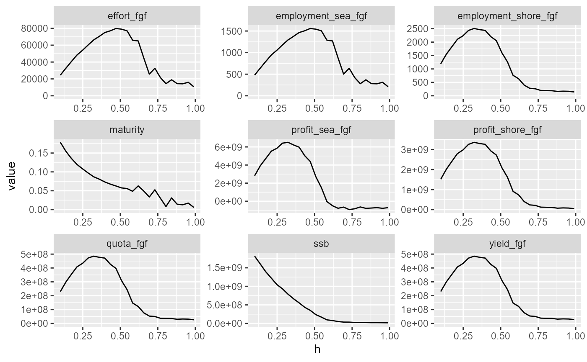
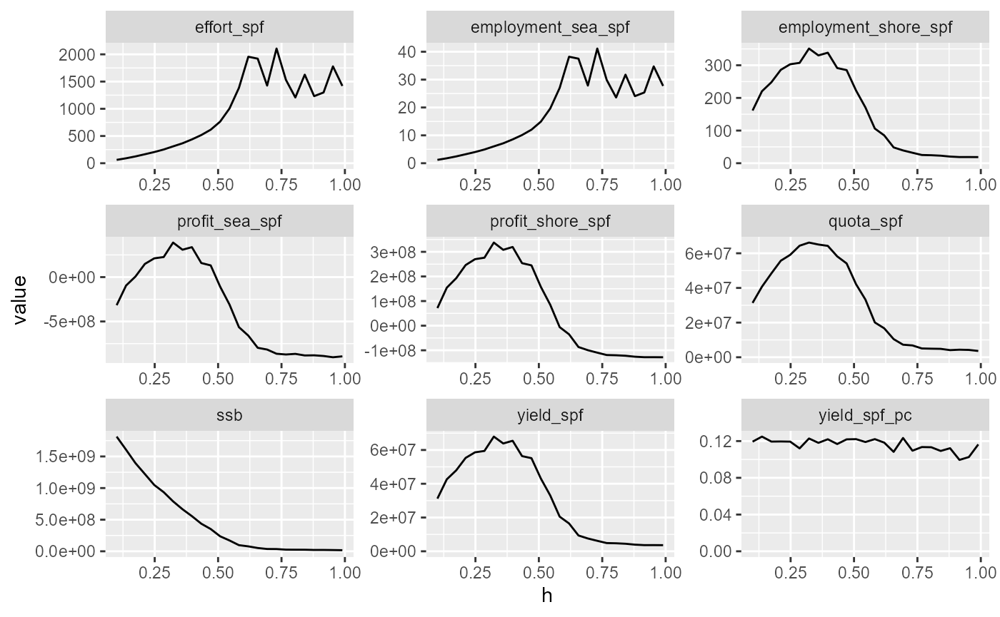
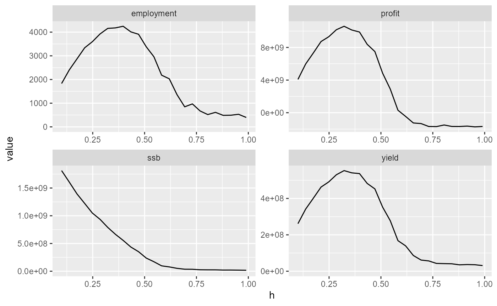
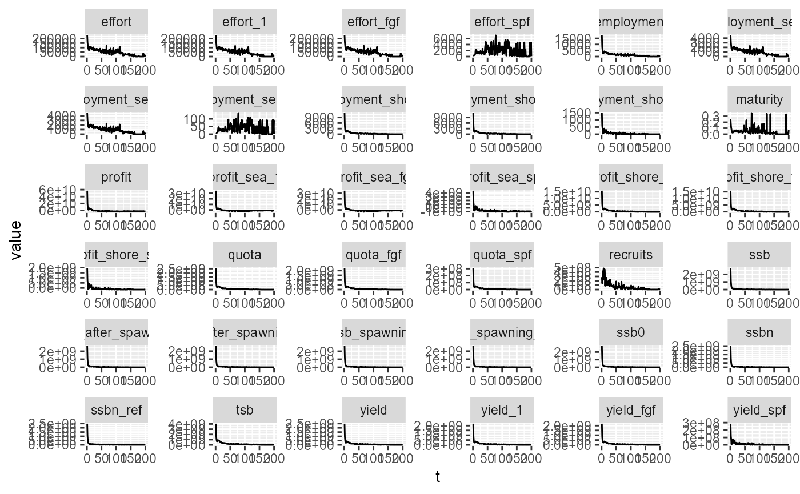
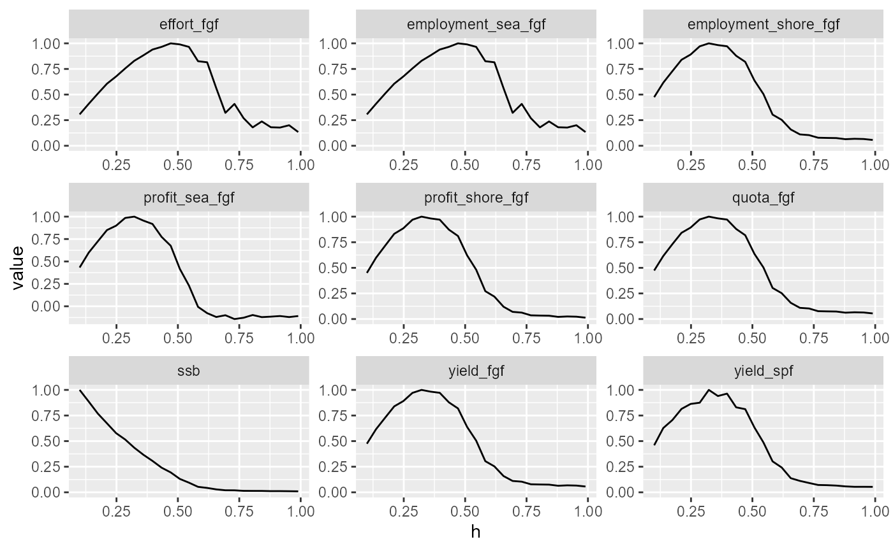
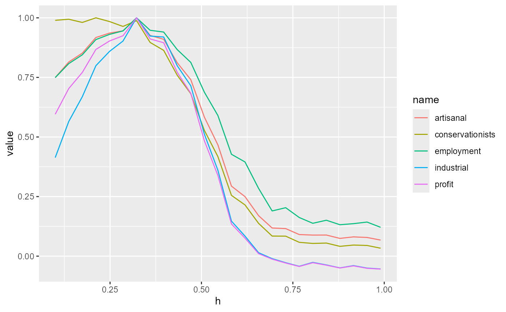

Scan over harvest rate
Jaideep
2026-04-09
h_scan.Rmd
# define parameter files
params_file_fleet = here::here("params/fleet_1_params.ini")
params_file_spf = here::here("params/fleet_1s_params.ini")
params_file_fish = here::here("params/cod_params.ini")
# Create a fleet and read parameters
fleet = new(Fleet)
fleet$readParams(params_file_fleet, F)
fleet$par$print()
# Create a prototype fish to construct the population
fish = new(Fish, params_file_fish)
fish$natural_mort_scalar = 1
fish$setMortalityCurveEmpirical(here::here("data/naturalmort.spline.csv"))
fish$par$print()Fishery Simulation
# Craeate the fishery. Note that we do not need to explicitly create a population - it is contained within the fishery
fishery = new(Fishery, params_file_fish, fish);
fishery$par$print()
fishery$addFleet(params_file_fleet, T);
fishery$addSpawnerFleet(params_file_spf, T);
v = fishery$equilibriateNaturalPopulation(5.61, 2e6, 200);
fishery$set_superFishSize(2e6)
# Initialize the
fishery$init(1000, 0, 5.61);
v2 = fishery$equilibriateWithoutFishing(5.61, 200)
df = as.data.frame(matrix(data=v2, nrow=200, byrow=T))
df = df |> setNames(c(
"ssb",
"tsb",
"maturity",
"nrecruits",
"factor_dr",
"n_superfish"))
df |>
slice(-1) |>
mutate(t = 1:n()) |>
pivot_longer(-t) |>
ggplot(aes(x=t, y=value)) +
geom_line()+
facet_wrap(~name, scales="free")
Running and Visualizing Simulation
Simulate the fishery over time and visualize key outputs.
colnames = fishery$colnames
v3 = fishery$simulate_multi(Tvec, lminvec, hvec, 200, 0, 3, F)
v3_avg = apply(v3, MARGIN=c(2,5), FUN=mean)
v3_avg |>
as.data.frame() |>
setNames(colnames) |>
mutate(h = hvec) |>
select(h, ssb, quota_fgf:profit_shore_fgf, maturity) |>
pivot_longer(-h) |>
ggplot(aes(x=h, y=value)) +
geom_line() +
expand_limits(y=0) +
facet_wrap(~name, scales="free")
v3_avg |>
as.data.frame() |>
setNames(colnames) |>
mutate(h = hvec) |>
select(h, ssb, quota_spf:profit_shore_spf, yield_fgf) |>
mutate(yield_spf_pc = yield_spf/(yield_spf+yield_fgf)) |>
select(-yield_fgf) |>
pivot_longer(-h) |>
ggplot(aes(x=h, y=value)) +
geom_line() +
expand_limits(y=0) +
facet_wrap(~name, scales="free")
v3_avg |>
as.data.frame() |>
setNames(colnames) |>
mutate(h = hvec) |>
select(h, ssb:profit) |>
pivot_longer(-h) |>
ggplot(aes(x=h, y=value)) +
geom_line() +
expand_limits(y=0) +
facet_wrap(~name, scales="free")
v3 |> dim()## [1] 200 25 1 1 36
v3[,16,1,1,] |>
as.data.frame() |>
setNames(colnames) |>
mutate(t = 1:n()) |>
pivot_longer(-t) |>
ggplot(aes(x=t, y=value)) +
geom_line() +
expand_limits(y=0) +
facet_wrap(~name, scales="free")
Calculate utils
# utils = fishery$max_avg_utils(rev(dim(v3)), v3) |>
# array(dim=dim(v3)[-1])
## Utils without profit masking
utils_r = v3 |>
apply(MARGIN=c(2,3,4,5), FUN=mean) |> # averge over t
apply(MARGIN=4, FUN=max) # max over c1, c2, T
utils_r_rep = utils_r |>
rep(each=dim(v3)[4]) |>
rep(each=dim(v3)[3]) |>
rep(each=dim(v3)[2]) |>
rep(each=dim(v3)[1]) |>
array(dim=dim(v3))
max_avg_utils = (v3/utils_r_rep) |>
apply(MARGIN=c(2,3,4,5), FUN=mean)
print(
max_avg_utils[,1,1,] |>
as.data.frame() |>
setNames(colnames) |>
mutate(h = hvec) |>
select(h, ssb, quota_fgf:profit_shore_fgf, yield_spf) |>
pivot_longer(-h) |>
ggplot(aes(x=h, y=value)) +
geom_line() +
expand_limits(y=0) +
facet_wrap(~name, scales="free")
)
Max avg utils with profit masking
dimsizes = dim(v3)
dimnames = c("t", "h", "lmin", "T", "u")
names(dimsizes) = dimnames
dims = 1:length(dimsizes)
names(dims) = dimnames
dims_tavg = dims[dimnames != "t"]
dims_nou = dims[dimnames != "u"]
profit_index = which(colnames == "profit")
## Utils with profit masking
utils_r = v3 |>
apply(MARGIN=dims_tavg, FUN=mean) # averge over t
profit_mask = utils_r[,,,profit_index] < 0
profit_mask = profit_mask |>
rep(dimsizes[dims["u"]]) |>
array(dim=dimsizes[dims_tavg])
v3_masked = v3 |>
apply(MARGIN=dims_tavg, FUN=mean) # averge over t
v3_masked[profit_mask] = NA
utils_max_avg_masked = v3_masked |>
apply(MARGIN=which(names(dims_tavg) == "u"), FUN=max, na.rm=T) # max over c1, c2, T / retain u dim
utils_r_rep = utils_max_avg_masked |>
rep(each = prod(dimsizes[dims_nou])) |>
array(dim=dimsizes)
utils_std = (v3/utils_r_rep)
utils_std_tavg = utils_std |>
apply(MARGIN=dims_tavg, FUN=mean)
print(
utils_std_tavg[,1,1,] |>
as.data.frame() |>
setNames(colnames) |>
mutate(h = hvec) |>
select(h, ssb, quota_fgf:profit_shore_fgf, yield_spf) |>
pivot_longer(-h) |>
ggplot(aes(x=h, y=value)) +
geom_line() +
expand_limits(y=0) +
facet_wrap(~name, scales="free")
)
Stakeholder satisfaction
nstake = 5
nu = 4
wvec = c(0.0, 0.3, 0.0, 0.7, # industrial
0.3, 0.5, 0.1, 0.1, # artisanal
0.3, 0.2, 0.5, 0.0, # employment-maximizing policymakers
0.2, 0.2, 0.0, 0.6, # profit-maximizing policymakers
0.5, 0.1, 0.2, 0.2 # conservationists
) |> array(dim = c(nu,nstake))
dimsizes_st = c(dimsizes[dims_nou], u=nu, S=nstake)
dimnames_st = names(dimsizes_st)
dims_st = 1:length(dimsizes_st)
names(dims_st) = dimnames_st
dims_st_tavg = dims_st[names(dims_st) != "t"]
wvec_rep = wvec |>
rep(each = prod(dimsizes[dims_nou])) |>
array(dim = dimsizes_st)
profit_mask_t = profit_mask |>
rep(each = dimsizes["t"]) |>
array(dim = dimsizes)
utils_std[profit_mask] = NA
utils_S = utils_std[,,,,1:4, drop = FALSE] |>
rep(times=5) |>
array(dim = dimsizes_st)
stakeholder_utility_t = (wvec_rep*utils_S) |>
apply(MARGIN=which(names(dimsizes_st) != "u"), sum, na.rm=T)
stakeholder_utility = stakeholder_utility_t |>
apply(MARGIN=which(names(dim(stakeholder_utility_t)) != "t"), mean, na.rm=T)
su_max_c = stakeholder_utility |>
apply(MARGIN=which(names(dim(stakeholder_utility)) == "S"), FUN=max, na.rm=T) |> # max over c1, c2, T / retain S dim
rep(each = prod(dimsizes_st[c("h","lmin","T")])) |>
array(dim = dimsizes_st[c("h","lmin","T", "S")])
stakeholder_satisfaction = (stakeholder_utility/su_max_c)
print(
stakeholder_satisfaction[,1,1,] |>
as.data.frame() |>
setNames(c("industrial", "artisanal", "employment", "profit", "conservationists")) |>
mutate(h=hvec) |>
pivot_longer(-h) |>
ggplot(aes(x=h, y=value, group=name, color=name)) +
geom_line()
)